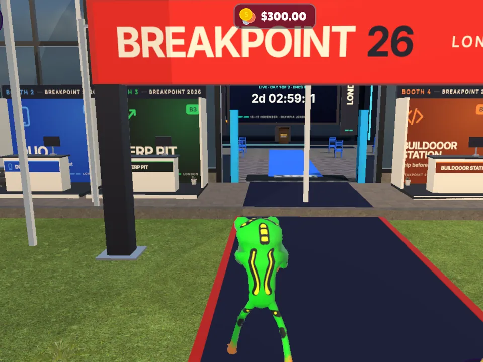
Breakpoint Park put on its London look for Breakpoint 2026. Booths, trivia and a check-in board by the Conference Hall.
Make your character, pick your tribe, get a job, trade pretend coins and drive around an island built out of the timeline.
What landed in the city this week

Breakpoint Park put on its London look for Breakpoint 2026. Booths, trivia and a check-in board by the Conference Hall.
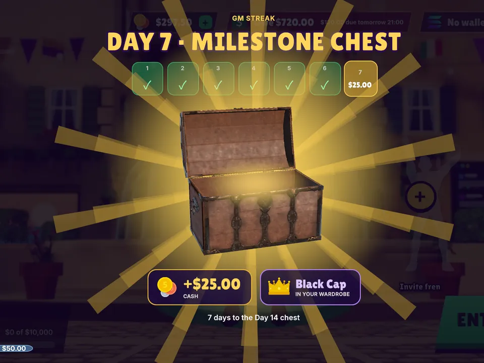
gm streaks are in. Say gm every day, crack the chest, and day 7 drops a milestone reward. Keep your streak alive.
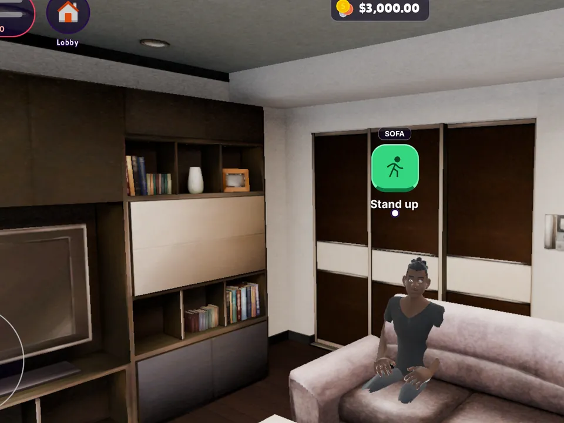
Your flat has a front door now. Walk in, sit down, move the furniture, and the Duo Shop courier drops off whatever you ordered.
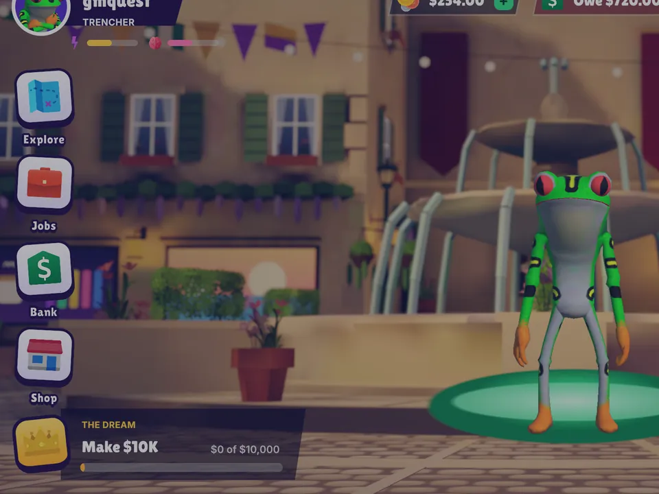
Quests showed up in the phone. Make a trade, tip a creator, tick it off. Confetti is not financial advice.
A life game set on CT Island
Ten districts. Twenty-one venues. Streets called Wen, Gm and Hodl. A harbour, a mountain, a palm islet and a downtown that never logs off.
You start with whatever the origin lottery hands you, then work, trade, decorate and drive your way up. Or down. It's CT.
A city built out of posts
Every corner is a bit. Perp Pit sits in the Trenches next to the Rekt Clinic. Airdrop Farm has a Sybil Barn. The Hackathon House is up the mountain, because of course it is.
Beachfront Boardwalk
Walk in off the boardwalk. Slots, Moon or Rug and coinflip, all played with pretend Cash. 18+.
Moon or Rug
Ride the multiplier and take profit before the rug gets pulled. Or don't, and tell the timeline about it.
Thirteen rides
Sports cars, taxis, scooters, a helicopter and a hovercar. Downtown traffic keeps moving whether you're late or not.
Breakpoint Park
Booths, trivia and a check-in board outside the Conference Hall, dressed for Breakpoint 2026.
Residences
Get a flat, order furniture from the Duo Shop and watch the courier van pull up outside.
Walk it, drive it or fly over it. Every clip here was captured on a Seeker.
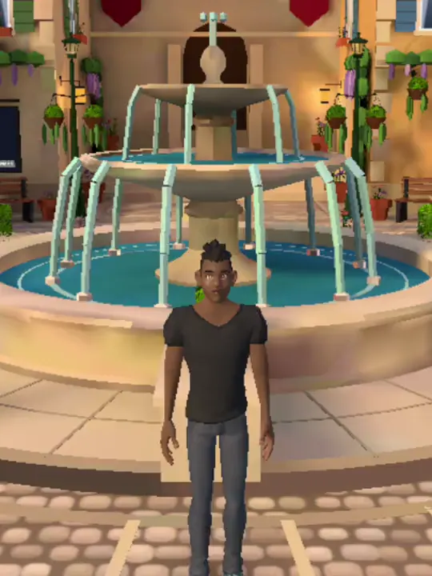
Timeline Square, Spaces Studio, Discord Heights. The conversation starts here.
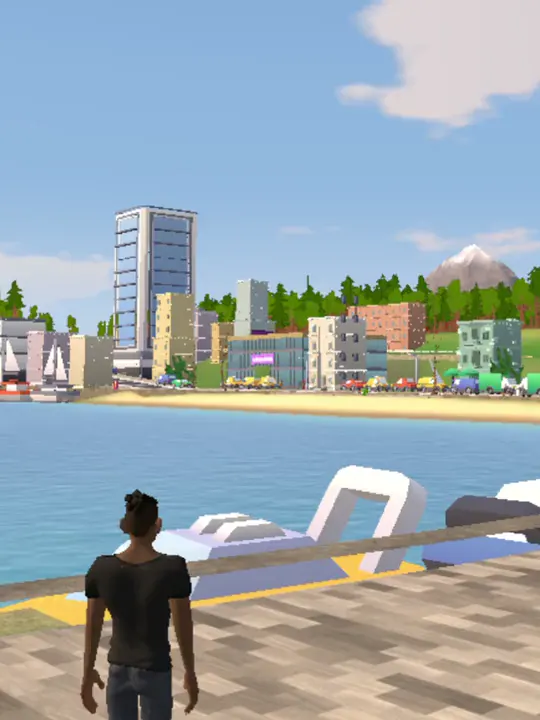
Cabal Lounge, Penthouse Row, the Yacht Club. Dress up. Dream big. Stay awhile.
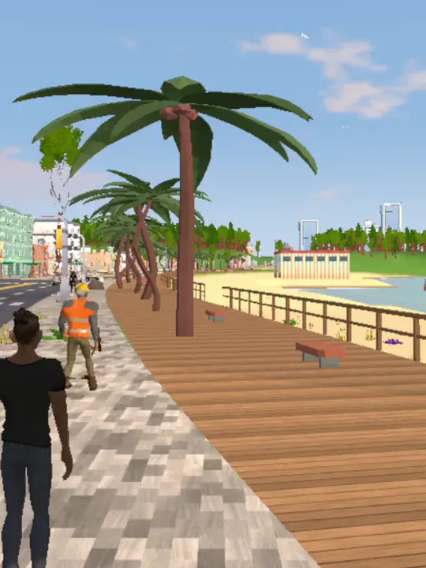
The arcade pier and the Prediction Pit. Too much timeline? Here's some sand.
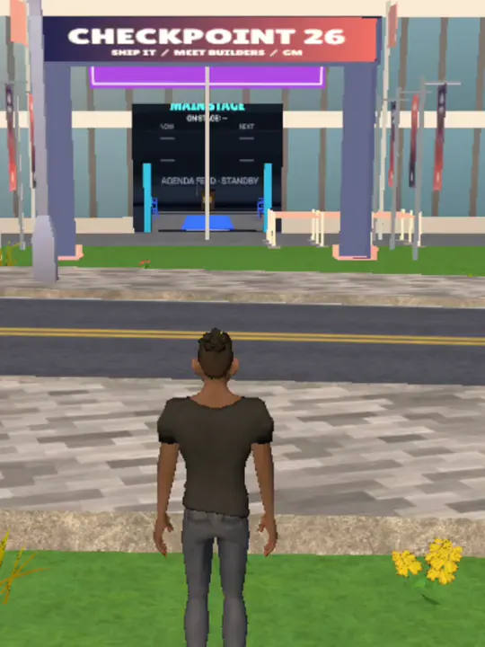
The Conference Hall and the Ratio Arena. Bring a lanyard.
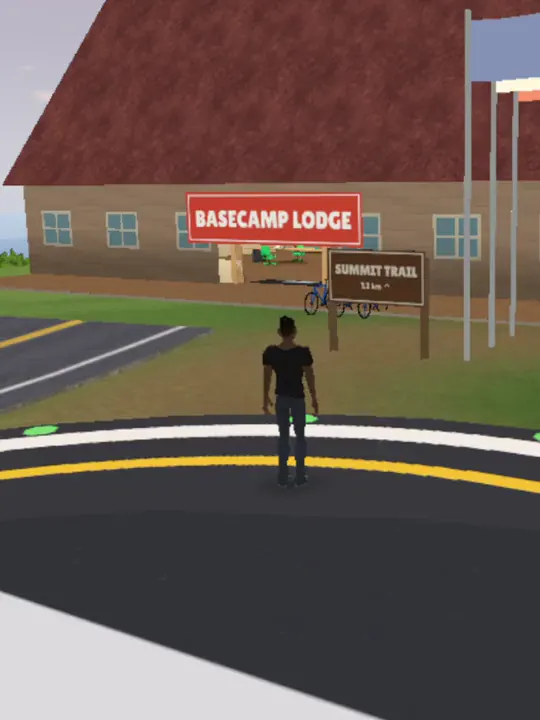
Basecamp Lodge, the ORE Refinery and a forest all the way up.
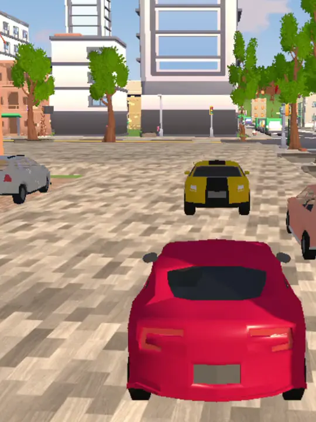
Drive it down the street. Then take off.
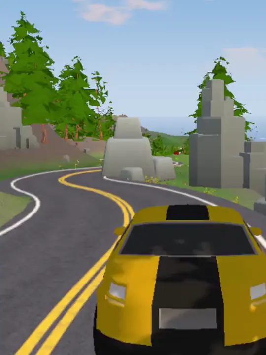
Scooters, taxis, sports cars, a helicopter. The long way is the fun way.
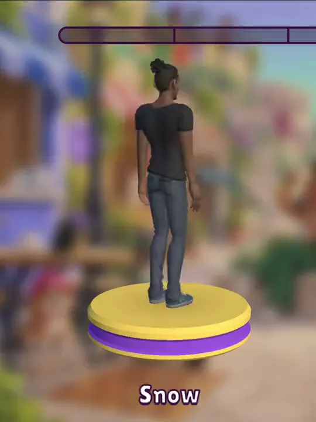
Pick who you walk around as. Yes, the frog.
This is the real map, drawn from the same data the game builds the island from. Every block is a building you can walk past. Pick a district to see what's there.
One tribe. One perk.
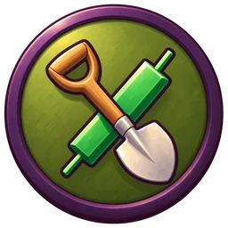
Sees new launches 3 seconds earlier
Living in the trenches.
Leverage cap +5x
Max long, no fear.
Prediction fee -50%
I already know the outcome.
Farm yield +15%
Points are my love language.
Calls reach 2x NPC followers
Drop the CA. I bring the vibes.
Project launch cost -30%
Shipping while you scroll.
Hidden from the rich list
You never saw me.
The origin lottery
Every new resident gets born into the city with a random start. Most get a basement and a debt. Some get a studio and a head start. Same odds as the game.
In the game you only get one roll.
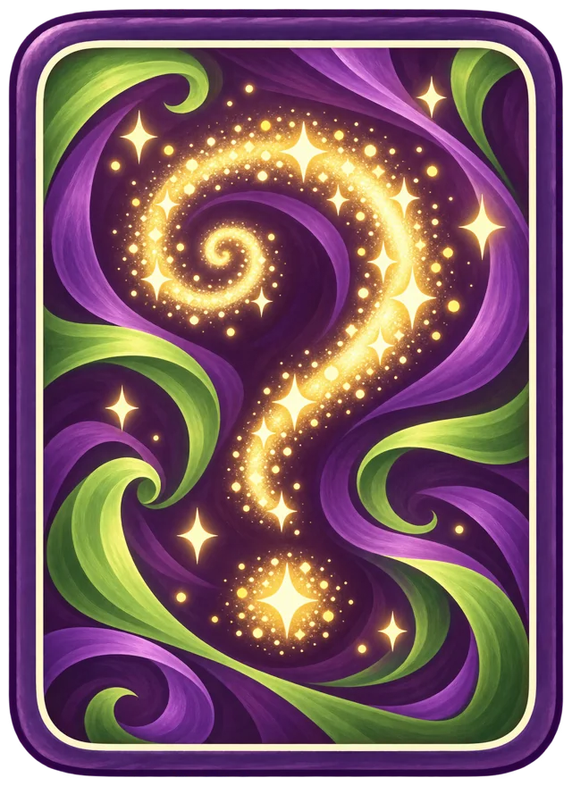
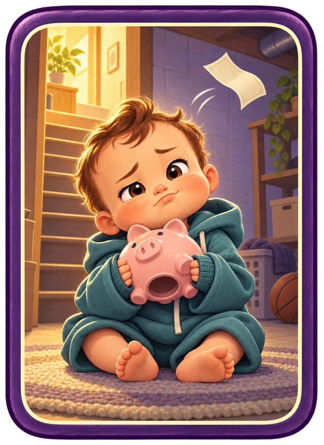
A 3D life game set on CT Island, a city built out of Crypto Twitter. You make a character, pick a tribe, work jobs, trade pretend coins, decorate your flat and get around on foot, by car or by hovercar.
Yes. Every clip on this page was recorded on a Solana Seeker from current builds of the game, and the map is drawn from the game's own world data.
CT Life is built for the Solana Seeker and runs on other Android phones too. A web version is on the way.
No. Cash in CT Life is pretend and can never be withdrawn, including in the Casino. If you connect a wallet, your real balances show up separately and never mix with game Cash.
They're nods. CT is made of these communities, so you'll find them around the island, from statues downtown to landmarks up the mountain. None of them are sponsors or partners.
YOUR NEXT LIFE IS EXTREMELY ONLINE
Get the gameOut now for Android. Download the APK for your Seeker or any Android phone. Coming to the Solana dApp Store.